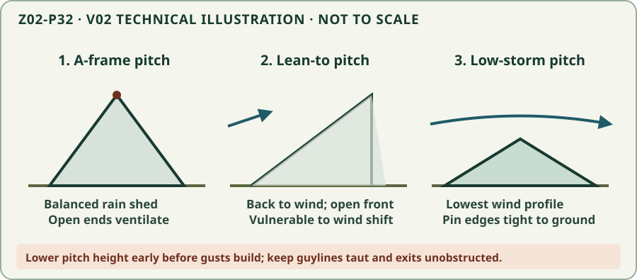

Z02-P32 · Shelter and housing · Adapted historical material
Compare A-frame, lean-to and low-storm tarp pitch configurations
Match tarp pitch geometry to shifting wind, rain angle and ventilation needs without overclaiming storm resistance.
When it applies · Commercial backcountry tarps pitched on permitted durable sites with dry ground insulation.
Equipment · Rated tarp with reinforced tie-outs, clean cordage, stakes, trekking poles or lawful tree anchors and groundsheet.

Actions
- Use a symmetrical A-frame pitch for overhead rain protection with open end ventilation; drop edges closer to the ground when blowing rain enters from the sides.[E20, E15, ED]
- Use an open lean-to pitch only for mild windbreak or shade when rain will not swirl under the high open front; expect wind shifts to expose the interior.[E15, E16, ED]
- Use a low-profile storm pitch (half-pyramid or low windward wedge) with windward edge near the ground and leeward vent when gusts rise, accepting reduced headroom and keeping exits reachable.[E15, E16, ED]
Failure recognition · Pitching a flat high tarp in heavy rain, allowing water to pool in the center until fabric tears or tie-outs pull free.[E16, E20, ED]
Verify · Confirm taut sloped runoff planes with zero water-pooling sags, clear exit clearance and reliable ground-splash setback.[E04, E20, ED]
Stop or change course · Tarps offer no lightning protection and limited defense against severe squalls, heavy snow or extreme wind; relocate to rated or substantial shelter when storms intensify.[E07, E16, E17]
Evidence and editorial notes
- E04 · NWS · Flood Safety: Key Points for Camping and Hiking (agency PDF)
- Section: Before and during camping; know your surroundings · Conditions: Stream valleys and runoff channels subject to flash flooding
Support: Choose higher ground away from water channels. Rain far upstream can drive rapid flooding.
Limitations: Dry streambeds and gentle swales can flood rapidly without local rainfall. · Conflicting evidence: None; aligns with NWS-FLOOD.
Editorial note: Core hydrological exclusion rule for shelter placement. · Specialist reviewer: Emergency management and hydrology
Primary source · checked 2026-11-24 - E07 · NWS · Lightning Tips (current web edition)
- Section: If you hear thunder; when it is safe to return · Conditions: Thunderstorm and reachable substantial building or enclosed hard-topped vehicle
Support: Move to proper shelter at thunder. Wait 30 minutes after last thunder before resuming outdoor activity.
Limitations: Fabric tents, open pavilions, and trees are not lightning-safe shelters. · Conflicting evidence: None; 30-minute rule is standard NWS guidance.
Editorial note: Separates weather cover from lightning protection in Z02. · Specialist reviewer: Weather safety and emergency management
Primary source · checked 2026-11-24 - E15 · NWS · Cold Weather Safety (current web edition)
- Section: Cold Weather Safety > Wind Chill and Dressing for Cold · Conditions: Cold, windy conditions where exposed skin cools rapidly
Support: Wind removes the thin warm air boundary layer around skin and permeable fabrics, sharply accelerating heat loss and frostbite onset; windproof outer shells and sheltered microclimates mitigate convective loss.
Limitations: Wind chill charts apply to exposed skin and do not change freezing point of water or equipment. · Conflicting evidence: None; clarifies physical mechanism of convective heat loss.
Editorial note: Supports wind-block geometry, shell layering, and wind-chill risk decisions. · Specialist reviewer: Cold-weather shelter and meteorology
Primary source · checked 2026-11-24 - E16 · NWS · Wind Safety (current web edition)
- Section: Wind Safety > High Wind Hazards · Conditions: Forecast or developing high winds, squalls, or straight-line winds
Support: High winds topple trees, loft debris, and stress lightweight shelters beyond fabric and anchor limits; relocate out of timbered fall zones and into substantial shelter before gusts peak.
Limitations: Tents and tarps lack standardized wind-speed survival guarantees across soil types and pitch angles. · Conflicting evidence: None; avoids unvalidated mph ratings for improvised pitches.
Editorial note: Drives high-wind shelter inspection, guying limits, and abandonment thresholds. · Specialist reviewer: Weather safety and shelter equipment
Primary source · checked 2026-11-24 - E17 · National Weather Service · Tornado Safety: During a Tornado (Current web edition)
- Section: During a Tornado: home, outside, vehicle · Conditions: Tornado warning; sturdy shelter may be unavailable
Support: Prefer the suitable lowest interior area of a sturdy building. If unreachable, use NWS location-specific last-resort guidance and avoid overpasses and flood-prone low ground.
Limitations: The branch is contextual. Never portray a ditch, vehicle or makeshift shelter as reliably safe. · Conflicting evidence: See A02 claim audit for boundaries.
Editorial note: Establishes severe-storm abandonment threshold for camp shelters. · Specialist reviewer: Emergency management and meteorology
Primary source · checked 2026-11-25 - E20 · NPS · Camping: What to Bring (current web edition)
- Section: Camping: What to Bring > Shelter and Sleep System · Conditions: Overnight camping across three-season and cool conditions
Support: Match tent/tarp, groundsheet, sleeping pad, and sleeping bag ratings to expected night lows and precipitation; test pitching and inspect poles, zippers, and stakes before departure.
Limitations: Manufacturer comfort ratings assume dry insulation, ground pad use, and adequate caloric intake. · Conflicting evidence: None; reinforces pre-trip inspection and dry-sleep separation.
Editorial note: Anchors manufactured shelter selection, groundsheet fit, and gear readiness. · Specialist reviewer: Shelter equipment and field education
Primary source · checked 2026-11-24
Source lineage · B003 tarp plate and NPS shelter guidance; new manuscript · Classification · Adapted historical material.